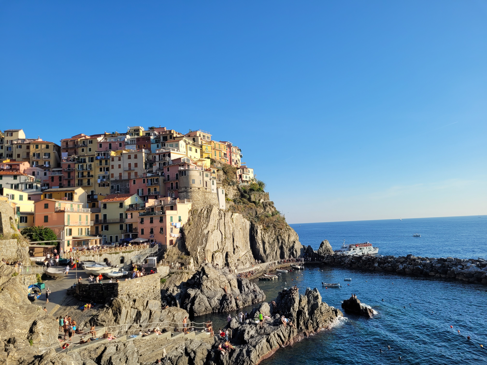
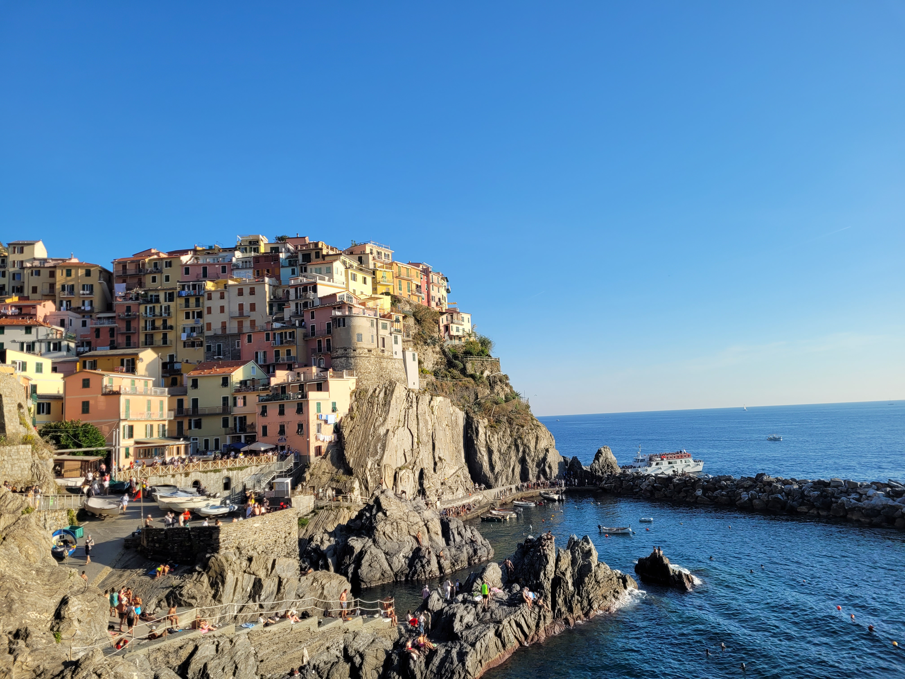

Cinque Terre
10/23/2023
Up on the western coast of northern Italy, Cinque Terre is a collection
of five small towns. On the first weekend of October, my friends and I
trained up to La Spezia which is just south of Cinque Terre. We arrived
around 7pm which gave us enough time to catch the last bus to our
Airbnb.
Opting to maximize our time in Cinque Terre, we decided for a very early
morning. Not only would it beat the tourism traffic but it would give us
the time to visit as many of the 5 towns as possible. Plus, there was
only 1 bus that ran from our somewhat isolated Airbnb to the train
station, so we either had to catch the 7am bus or hike 2.5 hours down.
Starting at the furthestmost town, Monterosso, we picked up some
breakfast and food for our hike. After some stunning sunrise pictures,
we started our hike. The original plan was to hike between all 5 towns,
which would take around 9 hours. Unfortunately, due to landslides, the
hikes between the three towns furthest south were closed. Still, the
leaves us with a couple hikes, so starting with Monterosso, we'd hike
down to the next town, Vernazza, and down one more to Corniglia.
Depending on time, we'd then take a train to Manarole and Riomaggiore.
The hike was beautiful. Walking right along the mountain edge, there is
a breath-taking view of the crystal-clear water, lush forests, and the
growing appearance of the next town. The elevation was a bit tough
because it seemed like at any given moment we were climbing several
flights of stairs only to immediately go back down them. The zig-zagged
trail with stairs made what seemed a short distance substantially
further and more challenging. It was actuallly kinda funny. Whenever
we'd pass by other hikers going the opposite direction, they always
sounded so sad, upset, and/or discouraged. At one point, one of them
told us, "Brace yourself!"; another hiker exclaimed "No you're not!"
when we said we were close; many others simply wished us luck as we'd
certainly need it. Personally, I found it more funny than discouraging
because we were having a great time on the hike, enjoying the scenary
and all.
We only had time for Monterosso, Vernazza, Corniglia, and Manarole on
Saturday, so on Sunday, we trained over to Riomaggiore for our final
town.

 
